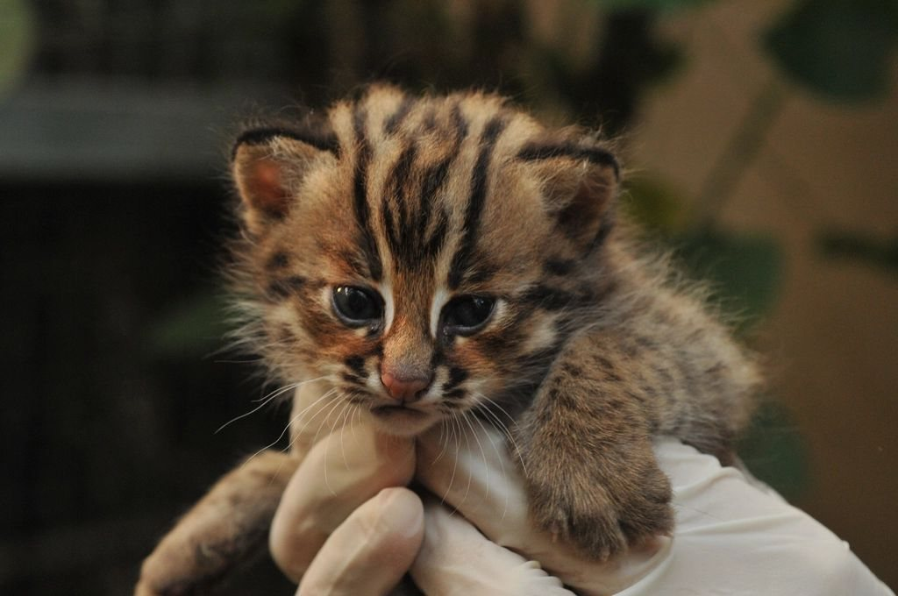

Klinik: muayene, aşı ve tedavi
Kedi ve köpekler için genel muayeneden aşı takibine, parazit uygulamalarından kısırlaştırma ön görüşmesine kadar. Klinik her gün 24 saat açık; acil bir durumda yola çıkmadan önce arayın.
Her gün 24 saat açık
Klinik rehberi
her gün · 24 saatGenel muayene kontrol ve değerlendirme
Genel durum, kilo ve beslenme, deri ve tüy, kulak, göz ve ağız kontrolü gibi temel değerlendirme. Bir şikâyet varsa ne zaman başladığını not edin.
Aşı takibi yavru ve yetişkin dönem
Yavru dönem aşı serisi ve yetişkin dönem yenilemeleri. Aşı karnenizi getirin; takvimi hekim, hayvanın durumuna göre belirler.
İç ve dış parazit koruma ve kontrol
Pire, kene ve iç parazitlere karşı koruyucu uygulamalar. Uygulama aralığı kullanılan ürüne ve hayvanın yaşam tarzına göre değişir.
Kısırlaştırma ön görüşmeyle planlanır
Operasyon, ön görüşmede yapılan değerlendirmeyle planlanır. Uygun zamanı, öncesindeki hazırlığı ve sonrasındaki bakımı o görüşmede konuşursunuz.
Beslenme ve bakım danışmanlığı her yaş için
Mama geçişi, kilo kontrolü, yavru beslenmesi ve ileri yaş bakımı gibi konularda öneriler.
Acil başvuru 24 saat açık
Gece ya da gündüz. Gelmeden önce arayın; durumu önceden bilmek hazırlık için zaman kazandırır.
Veteriner ilaçları bilgi alın
Hekiminizin önerdiği ilaç ve bakım ürünleri hakkında bilgi için resepsiyona sorun.
Evcil hayvan kuaförü kapsamını sorun
Tıraş, yıkama ve tüy bakımı gibi hizmetlerin kapsamını ve uygun günleri telefonda öğrenin.

Muayeneye gelirken
Muayene kısa sürer; yanınızdaki bilgi ne kadar netse hekimin değerlendirmesi o kadar kolaylaşır.
- Aşı karnesi ya da önceki aşı kayıtları
- Kullandığı ilaçlar, mümkünse kutularıyla birlikte
- Daha önceki tahlil, görüntüleme ya da rapor sonuçları
- Şikâyetin ne zaman başladığına ve nasıl seyrettiğine dair kısa notlar
- Öksürük, nöbet ya da topallama gibi gelip giden belirtiler için kısa bir video
- İshal ya da kusma şikâyetinde örnek getirmeniz gerekip gerekmediğini önceden sorun
- Kediler için kapalı taşıma çantası, köpekler için tasma ve kısa kayış
- Bir işlem planlandıysa öncesindeki aç kalma süresini mutlaka sorun
Aşı yol haritası
Yavru kedi ya da köpeğinizin doğum tarihini girin; genel kabul gören aşı ve kontrol dönemlerini tarihleriyle görün. Bu genel bir yol haritasıdır: dozları ve tarihleri hekim, hayvanın sağlık durumuna göre belirler.
- Doğum tarihini girdiğinizde takvim burada oluşur.
Bilmekte fayda var
Muayene öncesinde ve sonrasında en çok merak edilen konular. Genel bilgidir; hayvanınıza özel kararı hekim verir.
Aşılar hakkında genel bilgi
Kedilerde temel karma aşı panlökopeni, herpes ve kalisi virüslerine; köpeklerde gençlik hastalığı (distemper), parvovirüs ve hepatite karşı koruma hedefler. Kuduz aşısı Türkiye'de kedi ve köpekler için zorunludur.
- Yavru dönemde aşılar tek seferde değil, birkaç hafta arayla tekrarlanan dozlar halinde yapılır.
- Kedilerde lösemi (FeLV), köpeklerde bulaşıcı öksürük ve leptospiroz gibi aşılar yaşam tarzına göre önerilebilir.
- Aşıdan sonra kısa süreli halsizlik ya da aşı yerinde hassasiyet görülebilir. Yüzde şişme, tekrarlayan kusma ya da nefes darlığı olursa hemen arayın.
İç ve dış parazitler
Pire, kene ve iç parazitler hem hayvanınızın sağlığını hem de evdeki diğer canlıları etkileyebilir. Hiç dışarı çıkmayan kediler de pire ve iç parazitle karşılaşabilir.
- Uygulama aralığı kullanılan ürüne, hayvanın yaşına ve yaşam tarzına göre değişir; hekiminizle birlikte belirleyin.
- Kene, özellikle ilkbahar ve yaz aylarında parklarda ve çimenlik alanlarda sık görülür. Yürüyüşten sonra kulak arkası, koltuk altı ve parmak aralarını kontrol edin.
- Köpekler için üretilmiş bazı dış parazit ürünleri kediler için zehirlidir. Ürünü yalnız etiketindeki türe uygulayın.
Kısırlaştırma öncesi ve sonrası
Kısırlaştırmanın uygun zamanı türe, ırka, yaşa ve sağlık durumuna göre değişir. Önce bir ön görüşme yapılır; operasyon günü ve hazırlık bu görüşmede netleşir.
- Operasyondan önce ne kadar süre aç kalması gerektiğini mutlaka sorun ve bu süreye uyun.
- Sonrasında yarayı yalamaması için koruyucu yaka ya da elbise önerilebilir.
- İlk günlerde zıplama ve koşmayı sınırlayın, yara yerini her gün kontrol edin.
- Kızarıklık, akıntı, şişlik ya da belirgin iştahsızlık görürseniz arayın. Kontrol gününü hekim söyler.
Yeni bir yavru sahiplendiyseniz
- İlk günlerde genel bir muayene ile başlayın; aşı karnesi açılır ve aşı ile parazit planı konuşulur.
- Aşı serisi tamamlanana kadar köpek yavrunuzu aşı durumu bilinmeyen köpeklerin bulunduğu alanlara götürmemeye özen gösterin.
- Yavru mamasına geçişi birkaç güne yayarak yapın; mama değişikliği ani olursa ishal görülebilir.
- Kucakta tutulmaya, taşıma çantasına ve dokunulmaya erkenden alıştırmak, sonraki muayeneleri kolaylaştırır.
İleri yaştaki dostlar
Yaş ilerledikçe bazı sorunlar sessizce başlayabilir. Kontrollerin hangi sıklıkla yapılacağını hekiminizle konuşun.
- Su içmede ya da idrar miktarında belirgin artış
- Açıklanamayan kilo kaybı ya da kilo artışı
- Ağız kokusu, mamayı tek taraftan çiğneme
- Merdivenden, koltuktan atlamaktan kaçınma; sertlik ve topallama
Evde ilaç verirken
- İnsanlar için üretilmiş ağrı kesici ya da ateş düşürücüleri kesinlikle vermeyin; bazıları kediler ve köpekler için zehirlidir.
- Dozu kendi başınıza değiştirmeyin; antibiyotiği hekimin söylediği süre boyunca verin.
- Bir dozu unutursanız ne yapmanız gerektiğini hekiminize sorun, iki dozu birden vermeyin.
- İlaçları çocukların ve hayvanların ulaşamayacağı bir yerde saklayın.
Acil bir durum mu var?
Gece ya da gündüz fark etmez. Yazmak yerine hemen arayın; durumu dinleyip size en hızlı yolu söyleyelim. Acil belirtiler listesi